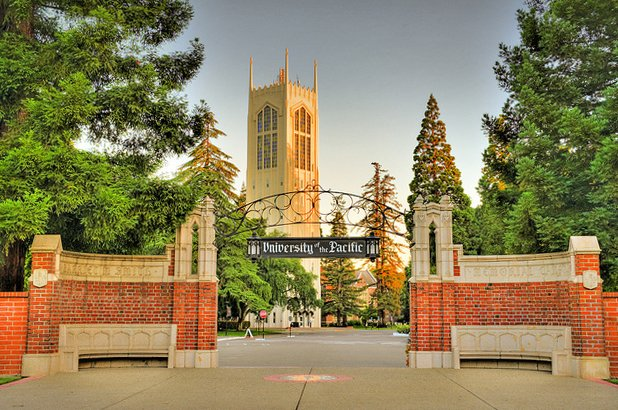

About Me
From a young age I always admired technology.
I was one of the few that when watching films such as Finding Nemo and Monsters Inc as a kid
never wanted to be the voice actor or the star but work in the background and make
the animation even possible. Growing up I was intrigued by how realistic animation was becoming and
how it was even possible. I knew that I was passionate about animation, but I started to become ever more passionate about
creating software and the creativity and excitement that came with it. With this is mind I went through high school and
college with the idea of creating software that could aid in the animation pipeline. While my interests for software span far beyond
just animation purposes this is what I always find my head coming back to. I am passionate creating things whether it be with animation software
or with an IDE to make peoples jaws drop.


College
In 2016 I made the decision that I would be attending University of The Pacific for undergrad.
In 2016 I had no idea how much Pacific would truly shape me into who I am today. I went in as undeclared,
I had leaned towards committing to a Computer SScience degree but wanted to wait and see if there was any
way taht I could combine my love for software engineering and animation into one.
With this is mind I learned of a program in my first year called Media X. Reading the info card gave me insight into what the program truly was,
a cross disciplinary program in which computer science ideals and animation ideals can cross. In my head I saw computer science and animation
and declared my major as Media X with a minor in Computer Science. The balance was perfect. Media X gave me a million oppertunities to hone my skills as a 3d modeler and animator while my Computer Science minor
gave me time to create software and improve my programming skillset. Upon the coronavirus outbreak in 2020 I knew that the job market was slim and I realized
that it was the perfect oppertunity for me to get my masters, something I planned on doing originally later in life. With this in my head I applied for the
Masters of Science Engineering Sciences focused in Computer Science at University of The Pacific to continue elevating my skills as a computer scientist. I am currently set to graduate in 2021 with
my Masters.
Swimming
When I was about seven years old I was put on a recreational swim team that I thought would lead to nothing.
It was something for me to do in the summer and it really to me was just a way to pass the time. Eleven years later I committed to University of The Pacific to swim on scholarship. While at University of The Pacific
I elevated myself as a student, and athlete and a leader. I was the team captain of the mens team my junior year and senior year of college. I was all academic my sophmore, junior and senior seasons, and I qualified for the Olympic Trials in March of my senor year. I am currently
training for trials with Pacific which due to the coronavirus outbreak has bee npushed back until June of 2021.